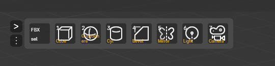
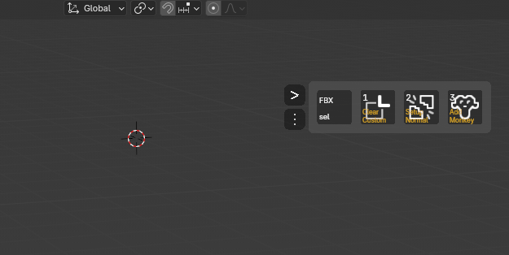
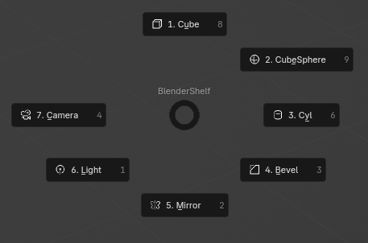
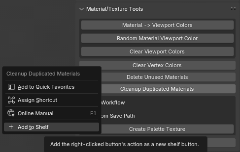
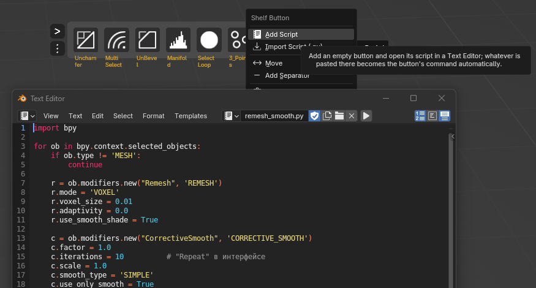

Панель быстрого доступа к инструментам Blender — без сложной настройки
Быстрый доступ к любимым инструментам прямо во вьюпорте — плюс радиальное пай-меню на хоткей.
Скачать Поддержать
Удобный доступ к инструментам, без лишних кликов

Плавающий шелф
Ряд кнопок с вашими командами прямо поверх 3D-вьюпорта — перетаскивается и меняет ориентацию на лету.

Пай-меню на хоткей
Те же инструменты в радиальном меню — вызывается хоткеем, не занимает место на экране.

Добавление в один клик
ПКМ на любой кнопке интерфейса, включая сторонние аддоны, → «Add to Shelf». Без скриптинга.

Свой скрипт — в одну кнопку
ПКМ на кнопке шелфа → «Add Script»: вставьте код в Text Editor, и он сам запишется в кнопку. Или «Import Script» — готовый .py-файл. Скрипт можно написать самому или попросить ИИ. Иконка подбирается автоматически.
Скачать
Инструкция
Скачать PDF-инструкциюПоддержать проект
EasyShelf бесплатный и open-source. Если аддон вам полезен — можно поддержать разработку.
Поддержать через DonationAlerts Поддержать на BoostyОбратная связь
Баг, идея или вопрос — без аккаунта GitHub и без почты.